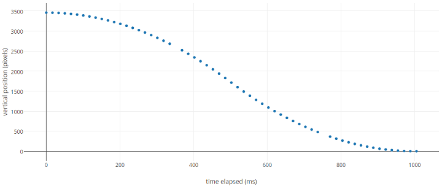
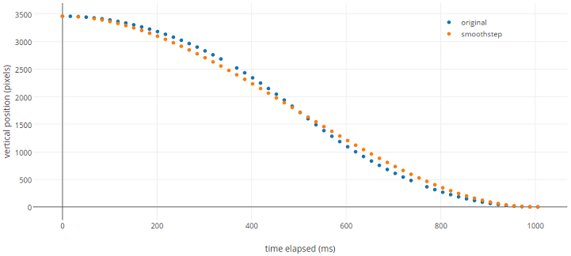

Fixing the Elevator
Extending the functionality of elevator.js
Elevator.js is a fun little module to add a hint of color to the ubiquitous "back to top" functionality of any website, introducing a delayed scroll action with some soothing elevator music. When I came across it I immediately knew I had to use it in some project, and last month I indeed included it in the first ever post of this blog.
However, I was disappointed to find a big issue with the current functionality: it can only bring you to the top. Of course, usually you should aim to do one thing, and do it well - can anyone blame Elevator.js for only... well, elevating? Regardless, I imagined a version which behaves more like a real elevator, that's not just a ride to the penthouse, but can take you to any floor of the building.
In this post, we'll look at some implementation details of elevator, fiddle around with rewriting some confusing parts, and finally I'll detail what steps I took to add new functionality to make it more elevator-like: the ability to move to an arbitrary target on the page.
Taking It Apart
First, let's quickly get to know the current implementation of Elevator.js. The original, unminified source by Tim Holman is only 210 lines. I recommend taking a quick look at it, it shouldn't take more than a couple of minutes to get a basic idea of how it works.
To consider the basic structure and data flow, let's take a look at a skeleton of the code, removing every implementation detail. Only leaving the function names and signatures, plus some structural comments, we get something like this:
var Elevator = function(options) {
//private fields
/* Utils */
function easeInOutQuad( currentTime, initialValue, changeInValue, duration ) {}
function extendParameters(options, defaults){}
/* Main */
function animateLoop( time ) {}
/* An ASCII-art Dalek */
this.elevate = function() {};
function browserMeetsRequirements() {}
function resetPositions() {}
function animationFinished() {}
function onWindowBlur() {}
function bindElevateToElement( element ) {}
function init( _options ) {}
init(options);
};
With such a small amount of code, if basic clean code principles are followed, this above should be enough to figure out what's happening. I hypothesize that if you can't, maybe the code is just not clear enough.
I'm particularly fond of code review methods operating at such high levels of abstraction, as some general properties of a system will be apparent without considering the actual implementations. An other fun example of this is explained here: code review without your glasses.
Doing code review well takes a lot of practice, and it might help to consciously try to look at the code at different levels of abstraction, lest you miss something important. If nothing else, keeping methods like these in mind helps you with that.
This code, however, doesn't hide too many surprises. Let's look at some details.
When creating an elevator instance, we have to pass an options object to the constructor. We have the option to specify a DOM element (which will act as a button for triggering the elevator), or use the elevate method of the returned object to trigger the process via other means. (Do note how this is the only public property of an elevator instance, attached to this.) The element's position will not be considered, just the current scroll state of the window at the start of elevating.
At instantiation, the init function is invoked with the options object, and takes care of the following things:
- extends the passed options object with default values stored inside the function itself
- if an element was specified, binds elevating to its click event
- if the browser fails a feature detection check, returns (the following steps are skipped)
- a custom duration is applied, if specified
- a blur event handler is set up to fast-forward the process when the page loses focus
- custom audio files, if specified, are created and preloaded as Audio elements
The variables describing the configured state of the elevator are stored as top-level variables in the constructor which all other functions can access.
During elevation, the following steps are carried out:
- The current scroll position is determined
- If a custom duration was not specified, it is calculated from the distance
- The animation loop is started via
requestAnimationFrame - Audio playback is started
The function responsible for the animation steps (animateLoop) also triggers the cleanup duties when the running time passes the specified duration. Cleanup involves resetting the state variables, and playing the bell jingle audio.
All in all, it's a neat self-contained package, easy to follow, not doing more than necessary, covering some common edge-cases. Besides extending the functionality, there's one part I want to explore in detail.
Better Than You Found It
The Boy Scouts are said to have a rule which instructs them to leave every campsite cleaner than they found them. There's a version of this rule applied to programming, which goes something like this:
Looking through the code of Elevator.js, there's one section in particular which made me think of this rule: the obfuscated easeInOutQuad easing function is a stain on the otherwise decently clean code of this module. It features single letter variable names, and does some black magic which indubitably determines the position of the elevator during elevating:
function easeInOutQuad( t, b, c, d ) {
t /= d / 2;
if ( t < 1 ) return c / 2 * t * t + b;
t--;
return -c / 2 * ( t * ( t -2 ) - 1 ) + b;
}
Let's look at three different (but not entirely independent) approaches to making sense of this code, and eventually hopefully replacing it with a version that does not need either.
The Oracle
Why would a single part of the code, uniquely, be written in this minified form? As an attribution comment in the source reveals, it comes from an external collection of easing functions, particularly from this file, almost verbatim.
Luckily enough, that file contains a single line comment explaining the purpose of each parameter:
t: current time, b: begInnIng value, c: change In value, d: duration
Now here's a rule of thumb: if you ever need to write a comment explaining the purpose of a variable, chances are that variable is not named properly.
In case of the original source, I sort of understand, in a collection of around 25 functions all doing effectively the same thing with the same interface, it actually probably increases readability and saves considerable bandwidth to not repeat the same variable names every line. However, when extracting a single function from the collection, it would probably be a good idea to rename the parameter names according to that comment above.
The bandwidth argument above is rarely a good one: I advise that first you write code as cleanly as possible, as verbosely as necessary, and if bandwidth ever becomes an issue, run the code through a minifier. The strategy we see here, single letter variable names with plenty of whitespace and indentation, is the worst of both worlds.
(In this sense, one-letter variable names are a special case of premature optimization.)
Learning By Example
If we don't find this comment in the external source, our other best bet is examining how the function is used elsewhere in the code. Since the rest of the code is pretty clear and verbose, there's a decent chance that the place of call will tell us more about the function signature than t, b, c, d does.
And indeed, we find the single invocation in our animation loop (line 65):
var easedPosition = easeInOutQuad(timeSoFar, startPosition, -startPosition, duration);
Do note that as a first refactoring step, 3 out of these 4 variable names used here would be clearly superior (in fact, perfectly suitable) name choices for the parameters inside the easing function.
-startPosition is the only one that raises more questions than it answers: it doesn't have a dedicated variable, it is very easily derived from an other parameter (in fact, maddeningly, inside easeInOutQuad it's negated again to yield, apparently, startPosition!) but for some reason, it exists as a separate param. This once again can be attributed to the external, unmodified nature of the easing function, and hints at some genericity that will later make our new features all the easier to implement.
The Black Box
At this point, we have a pretty good idea of the interface of the easing module, but the workings of it are still a black box. At the interface between the module and our clean code parts we can take measurements of both the inputs and the outputs of this component, basically using the normal operation of the elevator as a parameter scan. (As such, the methods described in this section can be applied independently of our findings above.)
Inserting some basic data collection into (or more suitably for our analogy, around) the function, we can record and visualize what sort of mathematical function does it implement. On the chart below you can see the values returned by the easing function, elevating from 3500 pixels down to the top over one second. These correspond to the scroll positions applied to the document.
 The shape of the easing function (created with plot.ly)
The first thing to notice is the shape: despite the name, the easing provided by easeInOutQuad is definitely not a quadratic function.
Taking an other look at the source, we will find an explanation for the name: the easing is in fact made up of joining two very similar quadratic functions, one used for easing in, the other for easing out.
t /= d / 2;
if ( t < 1 ) return c / 2 * t * t + b; //quadratic eq #1
t--;
return -c / 2 * ( t * ( t -2 ) - 1 ) + b; //quadratic eq #2
The code, however, is still pretty hard to follow, even if we are good at plotting equations in our heads. An educated guess is that t stands for time and is our running variable, the rest is quite a mess... The variable names are truncated, an input parameter is reassigned in two places, there are two return statements, so it's not well structured in classical sense of the word either.
Execution is split into two branches at t < 1, and in the latter case t is decreased by 1 (making it less than 1 again...) before it is used in a slightly different quadratic equation. How much 1 is in relation to t is hard to tell, but the chart above suggests that the two quadratic parts are joined halfway though the interval, which in turn would mean that the t /= d / 2; part normalizes t to the [0-2] interval. This allows us to finally reason about the meaning of the d parameter (duration?) as well, but I would have preferred proper parameter names to begin with.
(Technically, you could also deduct the roles of the b and c params with relative ease now. b has the role of an additive constant in the equations of both branches, maybe the letter stands for base offset. Additionally, the return value is always expressed as a fraction of c, maybe short for overall change? However, the random offsets and minus signs make this function still a bit of a head-scratcher.)
Patching It Up
Now that we have a pretty good idea of what that function does (and how), we should be more comfortable modifying it.
First of all, let's make the parameter names more verbose. Since the comment we found explaining their purpose happens to be pretty short, these very descriptions would make perfectly fine camelCase identifiers:
- t: "current time" -> currentTime
- b: "begInnIng value" -> beginningValue
- c: "change In value" -> changeInValue
- d: "duration" -> duration
With a few more touches we end up with something like this:
function easeInOutQuad(currentTime, initialValue, changeInValue, duration) {
currentTime /= duration / 2;
if ( currentTime < 1 ) return changeInValue / 2 * currentTime * currentTime + initialValue;
currentTime--;
return -changeInValue / 2 * ( currentTime * ( currentTime -2 ) - 1 ) + initialValue;
}
Now let's not disregard the fact that currentTime does not actually hold the current time anymore after the first line, but a normalized value. (Also, that double division is ugly.) The next version is:
function easeInOutQuad(currentTime, initialValue, changeInValue, duration) {
var normalizedTime = 2 * (currentTime / duration);
if ( normalizedTime < 1 ) return changeInValue / 2 * normalizedTime * normalizedTime + initialValue;
normalizedTime--;
return -changeInValue / 2 * ( normalizedTime * ( normalizedTime -2 ) - 1 ) + initialValue;
}
Oh, what if duration is 0? Well, in javascript, dividing a non-zero number with 0 yields Infinity, and our quadratic equation just happens to return -0 for Infinity, and so the easing function returns a 0 position for 0 duration.
This seems like an ugly edge-case, but in the context of elevator.js, it doesn't ever present itself, because in the init function the presence of a custom duration is detected with an if(_options.duration) check, which 0 (as a falsy value) doesn't pass.
So we're sort of safe, but this is the sort of implicit cross-dependence that might make the edge-case appear from a seemingly unrelated change in the future.
Running this through a static analyzer, (given a conservative enough ruleset) we will probably also receive warnings about having single-statement if/else branches instead of blocks. (The corresponding JsHint rule is curly: true.)
Let's fix that, and while we're at it, I would also emphasize the exclusive nature of the branches by making the else statement explicit too:
function easeInOutQuad(currentTime, initialValue, changeInValue, duration) {
var normalizedTime = 2 * (currentTime / duration);
if ( normalizedTime < 1 ){
return changeInValue / 2 * normalizedTime * normalizedTime + initialValue;
} else {
normalizedTime--;
return -changeInValue / 2 * ( normalizedTime * ( normalizedTime -2 ) - 1 ) + initialValue;
}
}
Maybe if the above was the state of the code to begin with, it wouldn't have caught my attention. However, it did, and now that I have spent all this time analyzing it, I can't help but apply some more radical changes.
I have two remaining issues with the current state of the easing function, resolving both will involve structural changes to the code, ultimately throwing away everything that we changed so far. So is often the way to better code.
Partial Application
First of all, I think it's worth noticing that in the mathematical sense of the word, only currentTime is an input variable of the easing function, the initial and target values, as well as the duration are just parameters - constant during any single elevation process.
This property of the function could be neatly represented by creating a partially applied function which only takes a single time parameter, and captures every other parameter in a closure.
If we take a look at the animateLoop function (line 65), we will see that only timeSoFar is assigned in this function, startPosition and duration are both accessed from the enclosing "global" scope, which is a code smell that a localized, curried function could be used instead.
A slight problem is that we can't just pass this soon-to-exist unary function to animateLoop, because that function is only called via requestAnimationFrame.
The timing of calls made by requestAnimationFrame will usually match the display refresh rate as per the W3C recommendation. As such, it's not surprising that on the plot earlier you saw 60 data points, I was running the measurements on a 60Hz laptop display, and the elevation duration was exactly a second.
Interestingly enough, when I ran the same code on a Windows 10 PC hooked up via a VGA connector to an LG IPS monitor reportedly operating on the same 60Hz frequency, the animation loop was only called 25 times. (If you have an explanation for this behaviour, please leave a comment!)
Instead of passing in a function, we can just create it in the enclosing scope, and animateLoop can access it directly, just like it did previously with the other parameter values.
To create a partially applied function, we need a builder function returning the single argument easing function. Since the parameters are primitive types, they can be captured in a closure without applying any extra tricks, so the creation of this function is trivial.
function getEasingFunction(initialValue, changeInValue, duration) {
return function(currentTime){
var normalizedTime = 2 * (currentTime / duration);
if ( normalizedTime < 1 ){
return changeInValue / 2 * normalizedTime * normalizedTime + initialValue;
} else {
normalizedTime--;
return -changeInValue / 2 * ( normalizedTime * ( normalizedTime -2 ) - 1 ) + initialValue;
}
}
}
(Note how the parameters are split petween the two functions based on whether they are constant or not - this technique could be applied to an arbitrary number and split of arguments.)
There's only one place for this function instantiation to go, inside the elevate method, once we gathered the necessary startPosition and duration values: (line 102)
getEasedPosition = getEasingFunction(startPosition, -startPosition, duration);
Throwing It Out
Having spent all this time and effort on the easing function, I can confidently say, it's still ugly, and overly complicated. Do we really need two slightly offset quadratic functions joined together? We could get a fundamentally similar shape with a single cubic function, a section of a sinusoidal or a sigmoid variant.
Let's go with the smoothstep function, 3*t^2-3*t^3, as it has both a simple form and a desirable shape in the 0..1 interval, making the time normalization easy as well.
For even better readability, we might prefer to pick a function with a well-known shape, as recognizing the special properties of the smoothstep function might take a moment or two, unless someone's coming from a graphical programming background. If we have the chance to not send our fellow programmers (or our future selves) scrambling for google or a piece of paper, it's probably not a mistake to take it.
Whichever function we choose, we can easily run into issues with small inaccuracies, either due to the function only approaching the extrema assymptotically, or the time variable overshooting the duration (which, due to the nature of requestAnimationFrame, is almost guaranteed to happen). These can be solved by a bit more sophisticated normalization and clamping.
Using this equation, we can shorten and simplify our easing function to this:
function getEasingFunction(initialValue, changeInValue, duration) {
return function(currentTime){
var normalizedTime = currentTime/duration;
return initialValue +
changeInValue*( 3*Math.pow(normalizedTime,2) - 2*Math.pow(normalizedTime,3) );
}
}The perceived movement remains mostly the same, see our smoothstep-based easing compared to the original implementation on the chart below.
 Comparing the original and the smoothstep easing function (created with plot.ly)
This concludes my aesthetic patches to the codebase, in the next chapter I move on to actually implementing the new functionality we were looking for in the first place.
I ended up not making a pull request involving the changes detailed above, as I feel them to be mostly aesthetic, and their benefits negligible - it's perfectly fine to have a black box function inside your code, as long as the interface is clear. If the easing function were an external dependency, I wouldn't have paid its implementation a second thought. Including it has the benefit of making elevator.js fully self-contained, which is a very welcome property.
Further improvements
Here are some other issues that come to mind for those who want to nitpick a bit more about elevator's source.
In early August, contributions adding legacy browser support were merged. Besides adding some feature-detection based tests to refuse elevator service, registering the click handler triggering the main operation was also augmented to use an attachEvent-based fallback for browsers not supporting addEventListener (which are basically only IE8 and below).
However, elevator service is refused to browsers not supporting requestAnimationFrame (IE9 and below), so these browsers wouldn't need proper event handling anyway. Additionally, attaching events with a fallback is also done inconsistently, with no fallback for blur event handling, only for click events.
The list of top-level variables could potentially also be shortened, at a quick glance, the presence of the body and that variables seems superfluous.
An entirely new batch of issues arises from the fact that after this augmentation, it suddenly makes sense to have multiple elevators present on a single page. In this case, it seems wasteful to have multiple instances, the whole options object could be passed to the elevate function, or a single target element after a single global configuration step. This would also solve issues about separate elevator instances having distinct states.
How far these features and issues are allowed to extend the original scope of the project, is ultimately up to Tim Holman's discretion.
The Fix
At this point, we have a pretty good understanding of the internal workings of elevator, which will help us greatly in adding new functionality, making this section considerably shorter than the previous. (Maybe I wouldn't need an elevator if my articles were short enough to take the stairs...)
To reiterate, the functionality we will add is the ability to scroll to any target on the page, not just the top.
We noticed earlier that the form of the easing function is more generalized than what our application required (so far), because an arbitrary position difference can be supplied, as opposed to always scrolling to 0. This will make extending the functionality much easier, because this is actually the exact generalization we wish to add ourselves - arbitrary targets. The necessary internal API is already in place!
We also saw how refactoring by introducing meaningful parameter names can highlight parts where additional functionality can be almost trivially attached. Before we capitalize on this, I want to explore a bit how would one go about amending the code without relying on the insight we gathered during the previous chapter.
Intuition First
I think it's interesting to first consider an approach to this task that doesn't involve dissecting the implementation as much as we did, in fact, barely at all.
The idea is based on the same principle as I mention above, considering the type of generalization we wish to make: we want to replace a constant of the implementation (scrolling to the top constantly) with a variable (scrolling to a custom scroll target).
My assumption is the following: given a decently reasonable architecture, if we find every occurrence of this constant in the code, they will pinpoint the exact set of locations where we have to apply changes to replace it with a variable.
In a perfect world, maybe the top position would be represented by a named numerical constant corresponding to the 0 value. Such a named constant is not present, but let's see how far does looking for every instance of the number 0 in the code gets us. The occurrences are:
- L67:
window.scrollTo(0, easedPosition);inside the animation loop, denoting the top of the page - L128:
mainAudio.currentTime = 0;: a false positive, used to reset the audio at the end of the animation - L146:
mainAudio.currentTime = 0;: a false positive, used to reset the audio in case of a blur event - L149:
window.scrollTo(0, 0);: used to scroll to the top in case of a blur event. (However, only one of these zeroes corresponds to the vertical top position, the other is the x-coordinate.) - L159-161: Multiple hits, used to scroll to the top in legacy browsers.
A more interesting question is, are there any places in the code where assumptions are made about scrolling to the top without using the number 0?
The answer is yes, there is one "implicit" appearance of the constant 0 in the code, in a line we examined well before, the invocation of the easing function:
var easedPosition = easeInOutQuad(timeSoFar, startPosition, -startPosition, duration);Can you see the 0 yet? Considering the roles of the parameters, we have an initial value of startPosition, and a change in value of -startPosition. The end result is of course initial+change, and startPosition+(-startPosition) happens to be 0, corresponding to the fact that the elevator scrolls to the top.
In this sense, the special value 0 is only seen in a combination of two parameter values, but keeping our generalization in mind, we can see that it could have been explicitly included in one of them, -startPosition being 0-startPosition.
In this form, 0 stands for a "target position", as the necessary change in position can be calculated as the starting position subtracted from the target position.
With this in mind, replacing the appropriate zeroes with a custom value will be very straightforward.
Wiring It Up
At the interface to the outside world, the elevator will need a way to accept a target element in its configuration stage.
Existing conventions tie our hands here, as with the element property of the options object one can already denote a DOM element for elevator, so to achieve consistency, our targetElement should be specified in the same way, passing a reference to an element.
To calculate the appropriate scroll position of the target, we introduce a simple helper function in the utils section, which traverses the DOM tree upwards, summing the offsets of the parent elements:
function getVerticalOffset(element) {
var verticalOffset = 0;
while( element ){
verticalOffset += element.offsetTop || 0;
element = element.offsetParent;
}
return verticalOffset;
}Besides adding a new top-level variable for storing this selection, the init function is extended using this function:
if( _options.targetElement ) {
endPosition = getVerticalOffset(_options.targetElement);
}Now in all the places where the "magic 0 constant" is present, as discovered in the previous section, this endPosition value can be used instead, most notably at calculating the eased position during animation:
var easedPosition = easeInOutQuad(timeSoFar, startPosition, endPosition-startPosition, duration);... or in case of our partially applied variant, during the creation of the easing function:
getEasedPosition = getEasingFunction(startPosition, endPosition-startPosition, duration);An initial value of 0 for endPosition will ensure backwards compatibility, in case a target is not specified.
Minor issues
There's actually a slight problem with this solution, which I've only noticed after the pull request had been accepted (I like thinking this points to the low severity of the issue).
Doing the position calculation in the init section makes the elevator disregard any document reflows that occur between initialization (usually at pageload) and the actual elevating. This can be an issue if the document is resized, or elements are repositioned due to content with dynamic size, potentially resulting in incorrect scroll positions.
Additionally, if a custom duration was not specified, the default value used to be calculated based on the start position, as that always equaled the distance traveled. Once we have custom targets, this distance calculation also has to be updated.
I've amended these issues by saving the element reference instead, and always recalculating its current position before elevating to it. At the time of publishing this article, this correctional pull request has not been accepted yet.
You can see the fix (without any of the aesthetic patches) assembled into a pull request here - it has since been accepted and merged into master. It has been my first contribution to an open source project, and as such, it'll probably always have a special place in my heart.
Hopefully this article managed to provide some additional insight into my thought process while analyzing foreign code, and provoke some thoughts way beyond the scope of the few lines' worth of augmented functionality. If I find the time, I'll try to make it a recurring segment of this blog where I look at some of my favourite open source projects.
Take the elevator back to the top.
Note:
Of course, if you look at elevator while reading this post, you will find that it does not lack this functionality anymore - the pull request I detail in this article has been merged.